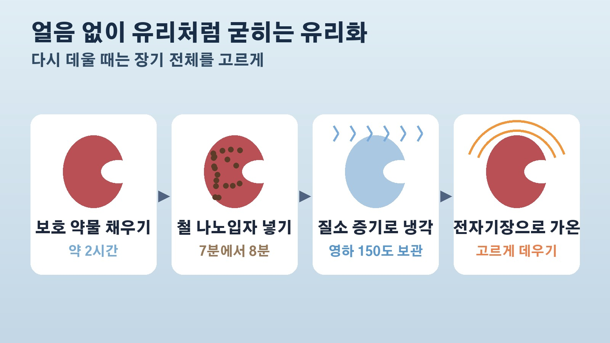

영하 150도에서 1년 보관한 돼지 신장이 다시 소변을 만들었다, 장기 이식 기다림을 바꿀 장기 보관 실험의 성과와 한계
장기 이식을 기다리는 가족이 있거나 관련 뉴스를 볼 때마다, 기증된 장기를 왜 오래 보관해 둘 수 없을까 궁금하셨던 분들 계실 거예요. 그 질문에 한 걸음 다가간 연구 소식이 나왔습니다. 미국 미네소타대학교 연구팀이 영하 150도에서 얼려 두었던 돼지 신장을 다시 데워 기능이 돌아오는 것을 확인했고, 그중 하나는 1년 넘게 보관한 신장이었다고 해요. 무엇이 확인됐는지, 아직 무엇이 남았는지 차례로 정리해 볼게요.
무엇이 확인됐나, 1년 보관한 신장이 다시 일했다
연구팀은 사람 신장과 크기가 비슷한 돼지 신장을 영하 150도까지 식혀 유리처럼 굳은 상태로 냉동고에 보관했습니다. 대부분은 며칠에서 몇 주 보관했고, 한 개는 1년을 조금 넘게 보관했어요.
이렇게 보관한 신장을 다시 데운 뒤 기계에 연결해 검사하고 돼지에 이식했더니, 신장이 제 색을 되찾고 소변을 만들었습니다. 둘 다 신장이 일하고 있다는 중요한 신호예요. 특히 1년 넘게 보관한 신장은 기계에 연결하자마자 바로 소변을 만들었고, 연구를 함께 이끈 이식외과 의사 에릭 핑거는 오히려 다른 신장들보다 상태가 좋아 보였다고 했어요. 이제 1년을 보관하고도 기능을 잘 되살릴 수 있다고 말할 수 있겠다는 게 연구팀 판단입니다.
다만 이 연구는 사전 공개 논문 서버에 올라온 단계로, 아직 다른 전문가들의 정식 심사를 거치지 않았다는 점은 알고 보시면 좋겠어요.
왜 중요한가, 지금 사람 장기 보존 한계는 24시간에서 36시간
이 결과가 주목받는 이유는 지금의 이식 현실 때문이에요. 현재 사람 장기를 보존할 수 있는 한계는 24시간에서 36시간입니다. 장기가 생겨도 이 시간 안에 맞는 환자에게 옮겨야 하니 쉽지 않은 일이죠. 미국에서만 해마다 수만 건의 이식이 이뤄지는데도 장기는 늘 모자라고요.
이식받은 사람은 몸이 새 장기를 거부하지 않도록 평생 면역을 누르는 약을 먹어야 하는데, 이 약은 부작용이 있고 감염과 암 위험도 높입니다. 장기를 오래 보관할 수 있다면 의사들이 더 꼼꼼하게 환자와 장기를 맞춰 볼 시간을 벌고, 이식 전에 환자의 면역 상태를 미리 준비해 거부 반응 위험을 줄일 수도 있다는 기대가 나와요. 핑거 교수는 진짜 장기 은행이 생기면 환자가 장기를 기다리는 대신 장기가 환자를 기다리게 된다고 표현했습니다. 텍사스의 한 장기 구득 기관 대표는 약물 과다 복용이나 총상처럼 기다릴 수 없는 응급 상황에 바로 꺼내 쓰는 장기 은행을 떠올리기도 했어요.
어떻게 얼리고 녹였나, 유리화와 철 나노입자
얼음이 생기지 않게 아주 빠르게 식혀 유리 같은 상태로 만드는 방법을 유리화라고 해요. 난자나 정자, 배아를 보관할 때는 이미 쓰이고 있지만 장기 하나를 통째로 유리화하는 건 훨씬 어렵습니다. 얼음 결정을 막는 부동액 같은 보호 약물은 독성이 강하고, 큰 장기를 안팎 고르게 식히고 다시 고르게 데우기도 쉽지 않기 때문이에요.
연구팀은 보호 약물을 넣은 장기에 산화철 나노입자를 함께 흘려 넣었습니다. 이 입자는 세포에는 아무 작용을 하지 않다가, 다시 데울 때 전자기장을 걸면 장기 전체에서 고르게 열을 내요. 전자기장 세기를 조절해 장기가 영하 120도쯤에 이르면 더 빨리 데워지도록 속도를 맞춘다고 합니다.

과정은 꽤 섬세해요. 꺼낸 신장에서 피를 씻어 내고, 온도와 압력을 조절하는 장치에 연결해 약 2시간에 걸쳐 보호 약물을 채웁니다. 이어 나노입자를 7분에서 8분 정도 흘려 넣고, 차가운 질소 증기로 식혀요. 영하 120도 안팎에서 유리 상태가 되면 장기 전체가 고르게 굳었는지 확인하려고 잠시 멈추는데, 그렇지 않으면 금이 갈 수 있기 때문이에요. 그다음 영하 150도까지 내려 냉동고에 보관합니다.
연구팀은 2023년에 같은 방식으로 쥐 신장을 최대 100일 보관했다가 쥐에 이식하는 데 성공했어요. 쥐 신장은 1그램 정도지만 돼지 신장은 100그램 정도라 규모가 크게 달랐고, 쥐에 썼던 보호 약물이 돼지 신장에는 잘 맞지 않아 조합을 다시 찾느라 3년이 걸렸다고 합니다.
아직 남은 숙제, 소변량 3분의 2와 보호 약물 손상
그렇다고 당장 병원에서 쓸 수 있는 단계는 아니에요. 다시 데운 신장은 1분 안팎이면 소변을 만들었지만, 양은 정상적으로 기대되는 양의 3분의 2 정도였습니다. 손상 흔적도 보였는데, 연구팀은 보호 약물 때문으로 보고 있어요.
이식한 돼지는 2시간 동안 지켜봤고, 이 신장이 오랫동안 생명을 지탱할 수 있는지는 아직 증명되지 않았습니다. 이 분야의 선구자로 꼽히는 냉동생물학자 그레그 페이히는 혈류가 돌아온 건 매우 중요하지만 손상 정도가 걱정된다며, 이번 실험만으로는 이 신장이 생명을 유지할 수 있었을지 알 수 없다고 했어요. 다른 냉동생물학자 피터 킬브라이드는 이번 성과를 문제의 절반을 푼 큰 돌파구라고 평가했습니다.
반대로 기대를 거는 목소리도 있어요. 연구에 참여하지 않은 하버드 의대 코르쿠트 위군 교수는 장기를 정말로 기한 없이 보관하는 길을 열 것이라며 이식 분야의 혁명적인 시기라고 했습니다.
다음 단계는 무엇일까, 사람 신장 실험 계획
연구팀은 다음으로 돼지에서 더 오랜 기간 지켜보는 실험을 할 계획이에요. 독성이 덜한 보호 약물을 찾는 작업도 이어 가고, 사람 신장으로 하는 실험도 준비하고 있다고 합니다. 핑거 교수는 기계에 연결해 두는 동안 이식 장기 상태가 좋아질 수 있다는 다른 연구가 있고, 몸속에 들어간 뒤 어느 정도 스스로 회복할 가능성도 있으며, 사람 신장은 돼지 신장보다 이 과정을 더 잘 견딜 수도 있다고 기대했어요.
정리하면 이번 연구는 큰 장기를 1년 동안 얼려 두었다가 되살려 소변을 만드는 데까지 처음으로 보여 줬지만, 오래 생명을 지탱할 수 있는지와 약물 손상 문제는 아직 풀리지 않았습니다. 정식 심사를 거친 논문과 더 긴 기간의 동물 실험, 사람 신장 실험 결과가 차례로 나와야 실제 이식 현장에 쓰일 수 있을지 판단할 수 있을 거예요.
참고한 기사 MIT 테크놀로지 리뷰 1년 동안 얼려 두었던 돼지 신장이 다시 살아났다 2026년 10월 15일, 네이처 커뮤니케이션즈 유리화와 나노가온으로 쥐 신장 장기 냉동보존과 생명 유지 이식 2023년, 미네소타대학교 의과대학 냉동보존한 쥐 신장 첫 이식 성공 소식
태그
돼지신장 장기냉동보존 장기이식 유리화 나노입자 장기은행 미네소타대학교 신장이식 MIT테크놀로지리뷰 이식대기